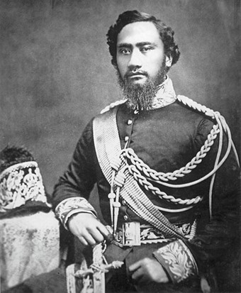
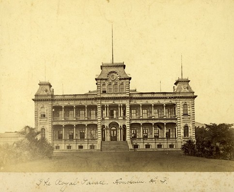
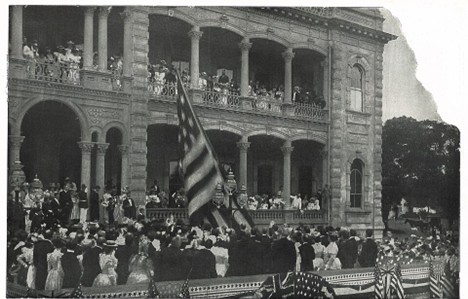

ʻIolani Palace

ʻIolani Palace is one of the most recognizable buildings in Hawaiʻi, but the story behind its name begins long before the palace most people picture today. In the early 19th century, this area was part of Pōhūkaʻina, an aliʻi burial ground central to Honolulu’s sacred geography. It was a place of lineage, not architecture, a reminder that the ground itself held power long before any palace walls rose from it.
In 1825, after the deaths of Kamehameha II (Liholiho) and Queen Kamāmalu in London, a Western-style royal tomb was constructed here to house their remains. The design drew inspiration from mausoleums at Westminster Abbey, built with coral blocks and a thatched roof, and guarded by two chiefs who protected the koa wood, iron-locked door.
When Kamehameha III moved the capital of the Hawaiian Kingdom from Lāhainā to Honolulu in 1845, he purchased the estate for his royal residence. The first palace on the site, Hale Aliʻi, followed traditional aliʻi architectural customs: ceremonial spaces for rule and reception, but no sleeping quarters. The king slept in a separate grass house nearby, which he named Hoʻihoʻikea. His successors built additional structures around Hale Aliʻi, including Ihikapukalani and Kauluhinano, creating a cluster of chiefly residences rather than a single monumental building.
The name “ʻIolani” arrived before the modern palace did. In 1863, Kamehameha V renamed Hale Aliʻi to ʻIolani Palace in honor of his brother Kamehameha IV, whose full name included “ʻIolani” (Alexander Liholiho Keawenui ʻIolani). The name references the ʻio, the Hawaiian hawk associated with chiefly mana, and lani, the realm of the heavens and aliʻi authority. By bestowing this name on the palace, Kamehameha V created both a tribute and a political statement: the residence of the monarch was to be linked not only to lineage, but to the symbolic vision and elevation of the royal hawk.

As the kingdom matured, so did the demands placed upon its government. By the time King Kalākaua assumed the throne, Hale Aliʻi was outdated and structurally deteriorating. Kalākaua demolished the old residence and constructed the palace we know today, completed in 1882, an architectural declaration that Hawaiʻi was a sovereign nation engaged with the world. The name linked him to his predecessors and grounded his ambitions in the spiritual authority of the aliʻi.
The palace grounds also reflected this duality of tradition and modernization. Hale Koa (ʻIolani Barracks), built to house the royal guards, stood nearby as a reminder that the monarchy was not only ceremonial but also a living institution requiring protection. A bandstand and two archive buildings rounded out the complex, signaling that ceremony, preservation, and governance all converged here.
In 1865, as the burial vault at Pōhūkaʻina grew crowded, the remains of multiple aliʻi were moved to Mauna ʻAla, the Royal Mausoleum in Nuʻuanu Valley. Yet many high-ranking chiefs were left undisturbed in the original grounds, including Keaweʻīkekahialiʻiokamoku, Kalaniʻōpuʻu, Kapiʻolani (Christian Chiefess), and Haʻalilio, the kingdom’s pioneering diplomat. Their presence beneath the palace grounds deepened its significance: the rulers of the living kingdom governed atop the resting place of their ancestors.

The overthrow of the Hawaiian monarchy in 1893 transformed ʻIolani Palace from a symbol of sovereign authority into the seat of a foreign-backed government within days. Palace contents were inventoried and sold. Government offices moved in, and the building was renamed the Executive Building. In 1895, following a counter-revolution aimed at restoring the monarchy, Queen Liliʻuokalani was tried in the former throne room and imprisoned upstairs for nine months. The quilt she made during that confinement is still displayed in the room now known as the Imprisonment Room, one of the most emotionally charged spaces in Hawaiʻi.
When the United States annexed Hawaiʻi in 1898, U.S. troops raised the American flag over the palace. The building then served as the capitol of the Territory of Hawaiʻi, undergoing interior renovations in 1930 that replaced its wooden framing with reinforced concrete. The palace’s original name was formally reinstated in 1935.

During World War II, the palace became the temporary headquarters for the military governor administering martial law. On its grounds, Japanese American soldiers of the 442nd Infantry Regiment were famously sworn in, a reminder that Hawaiʻi’s history encompasses many peoples and complicated loyalties.
After statehood, the palace continued to serve as the seat of government until 1969, with the governor occupying the former royal bedroom and the legislature meeting in the throne and dining rooms. But by then, a restoration movement had begun. Governor John A. Burns, cultural advocates, and the newly formed Friends of ʻIolani Palace spearheaded an effort to restore the palace. Hale Koa was moved to its current location and repurposed as a visitor center. Original furnishings, long scattered through auctions and private collections, slowly returned home through research, grit, donations, fundraising, and occasionally luck.
ʻIolani Palace opened to the public as a restored historic site in 1978.
Over two centuries, this site has been a burial ground, residence, ceremonial hall, seat of lawmaking, government headquarters, court, prison, restoration project, and museum. Through all of this, the name ʻIolani remained. It is the lens through which the palace’s story is best understood: a name that binds lineage, power, grief, and hope.
Today, ʻIolani Palace is more than a landmark. For many visitors, it is simply beautiful. For many locals, it is a reminder of what Hawaiʻi once was, what it endured, and what still lives beneath the surface. Place names in Hawaiʻi often tell stories hidden in plain sight, but ʻIolani is one of the rare names that tells several stories at once, in the center of a modern city, where the Hawaiian flag still flies over the palace even though the sovereign government it once represented no longer stands.
ʻIolani Palace is more than a building. It is a name that carried the weight of a kingdom, its authority, its aspirations, and its history, long after the world around it changed.